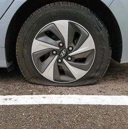
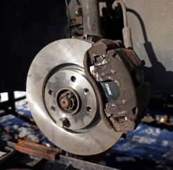
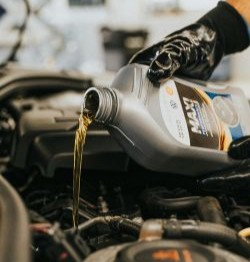
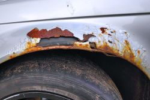
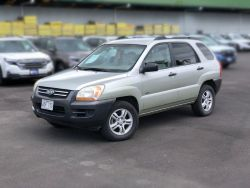

latest
How to change a tyre
How to take off a car wheel. One of the most fundamental parts of working on a car is properly and safely taking the wheel off and putting it back on.
more infoHow to change brake pads
Learn how to replace your brake pads and rotors on your car. Most cars with brake calipers will be similar to this and after watching this you will be able to change your own brakes and save money.
more infoHow to do an oil change
Oil Change. Learn everything there is to know about how to change your oil. Even if you know nothing about cars, after this video, you will be able to change the oil yourself!
more infoHow to repair rust
Rust removal and repair. Repairing rust on your car is something that should be done quickly to prevent it from spreading. It can be easily done by using strong but inexpensive body filler.
more infoHow to buy a used car
Learn how to inspect a used car for purchase. I show you everything you need to know on how to inspect a used car for the first time when the owner is not around to give you a test drive.
more info